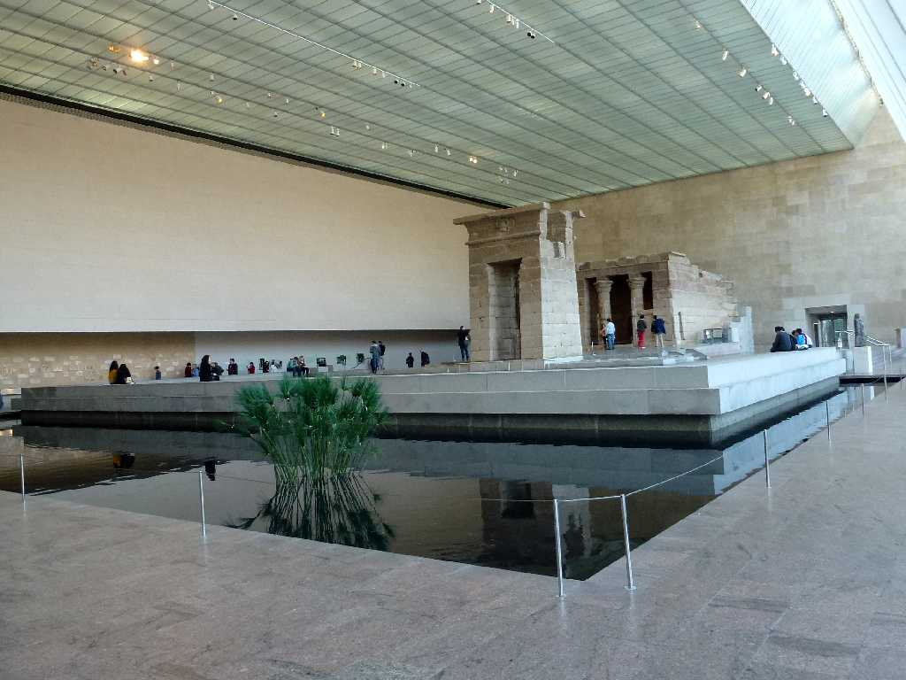
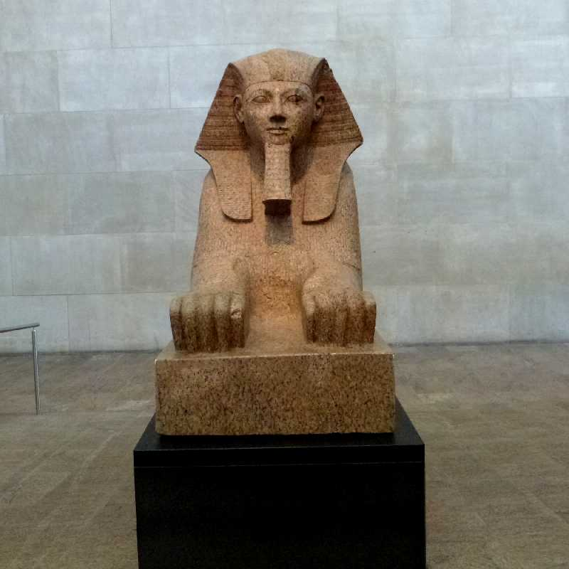
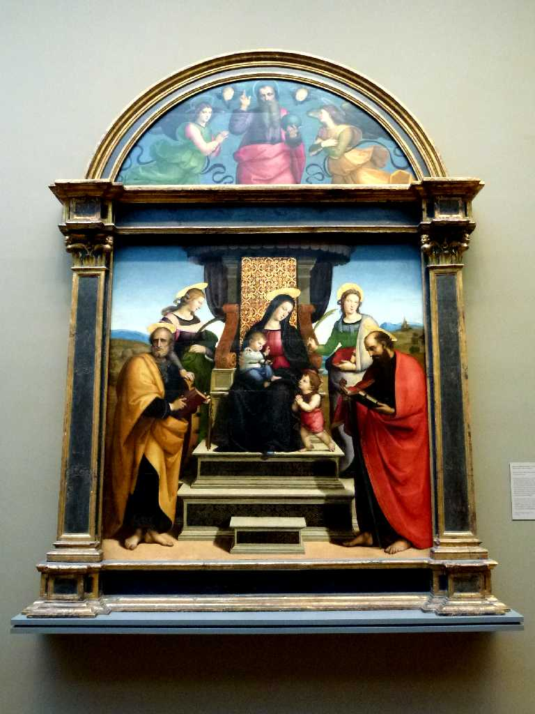
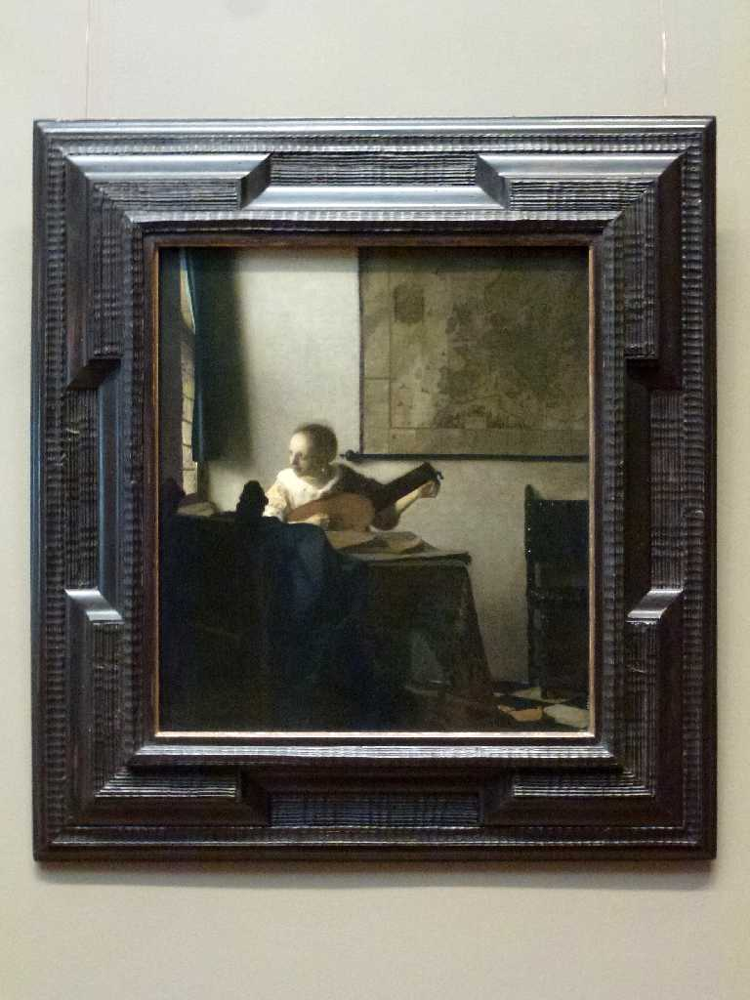
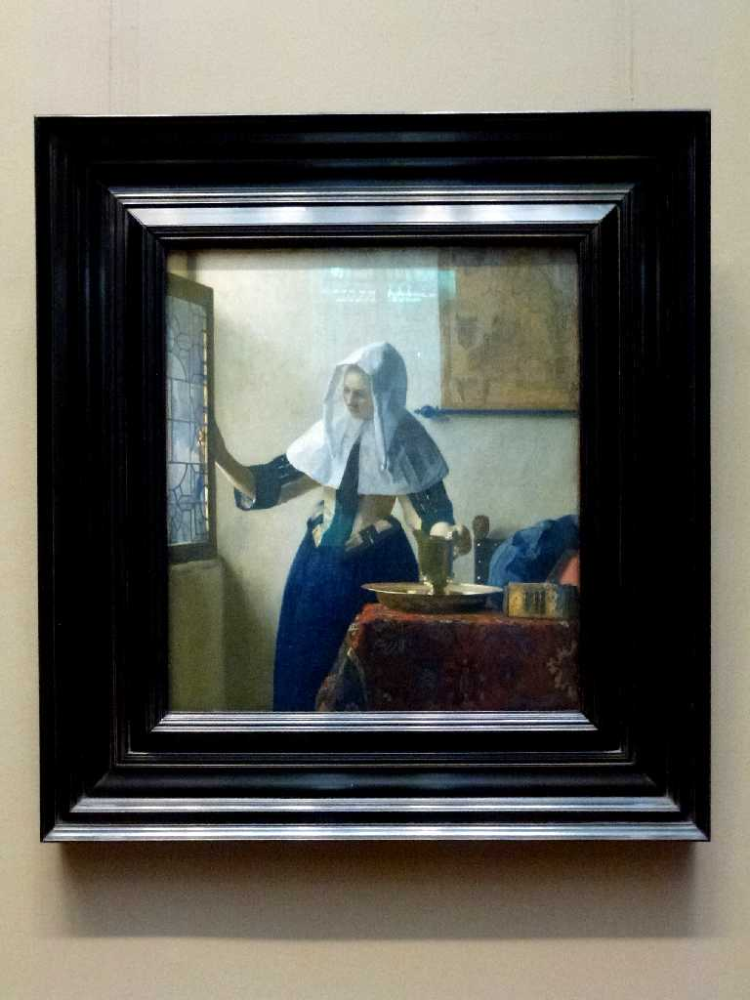
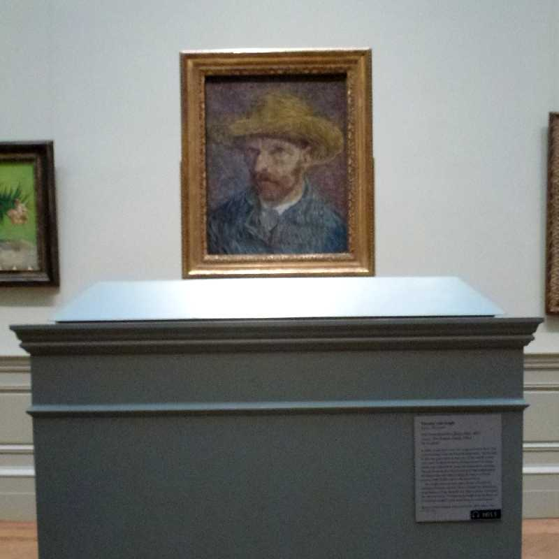
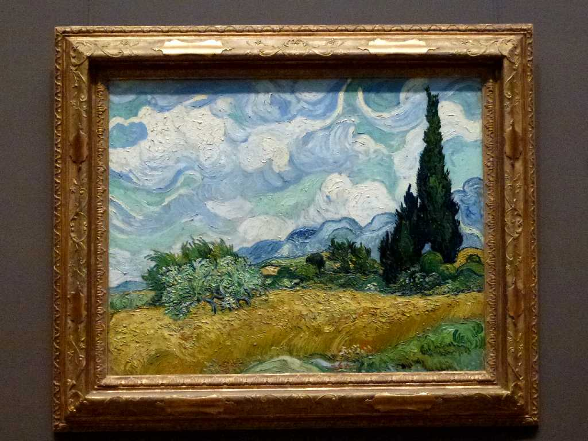
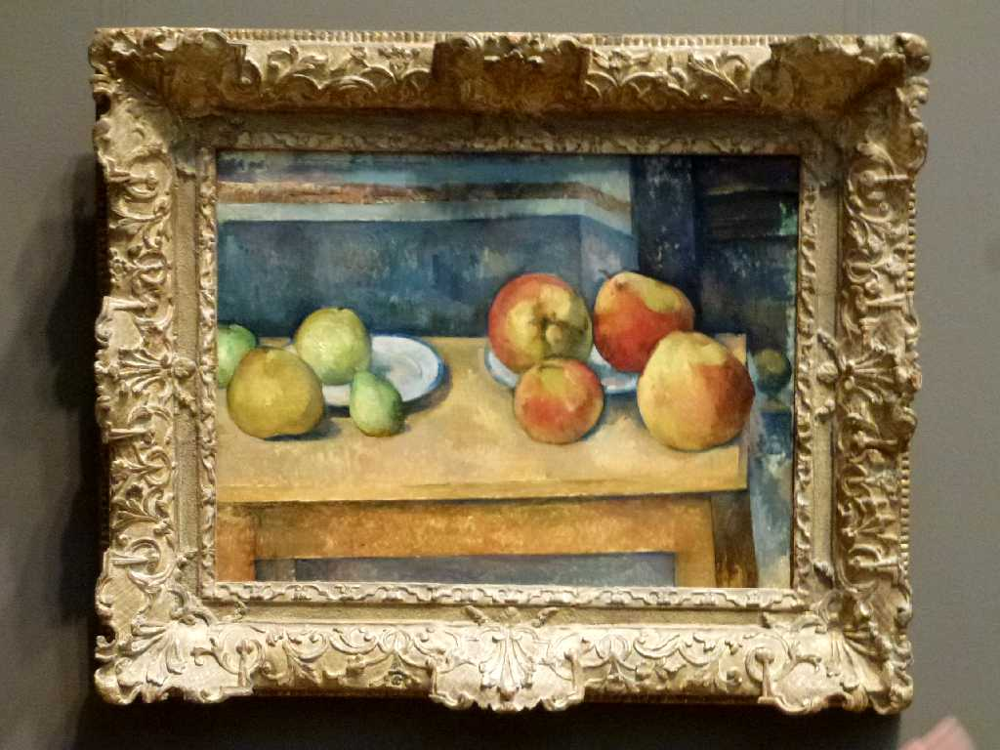
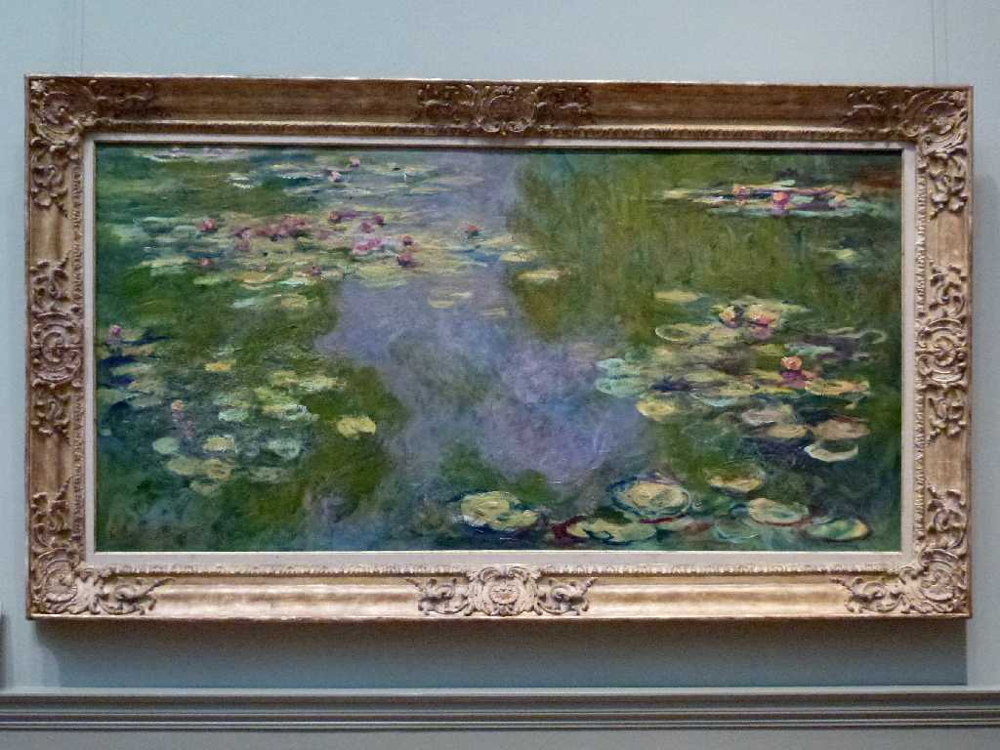
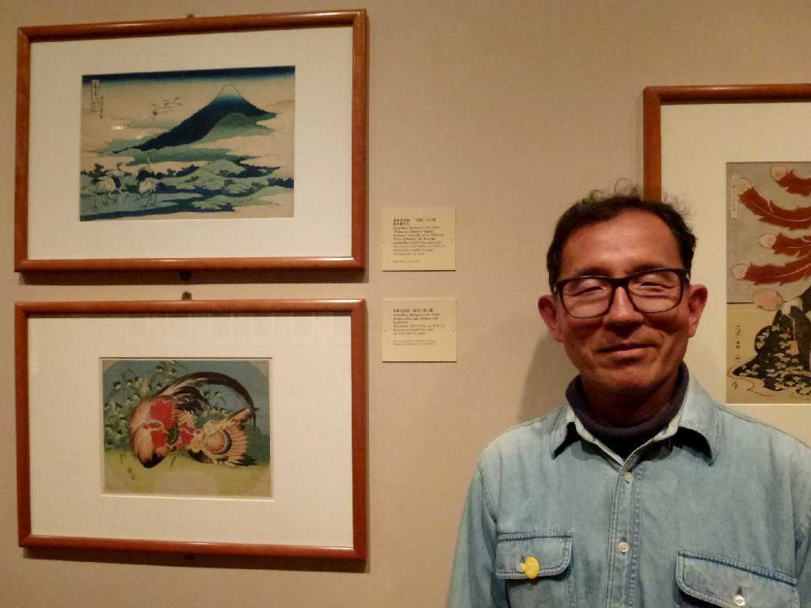

The Temple of Dendur Roman Period BC10 The Metropolitan Museum of Art New York
デンドゥール神殿はアメリカ政府がヌビアの遺跡保護を支援した感謝の印としてエジプト政府から贈呈された

Sphinx of Hatshepsut New Kingdom BC1479-1458

Raffaello La Pala Colonna 1504

Vermeer Woman with a Lute 1662

Vermeer Young Woman with water pitcher 1664

Gogh Self Portrait with straw hat 1887

Gogh Wheat Field with cypresses 1889

Cézanne Still Life with Apples and Pears 1891

Monet Water Lilise 1919

February 15 2013 The Metropolitan Museum of Art